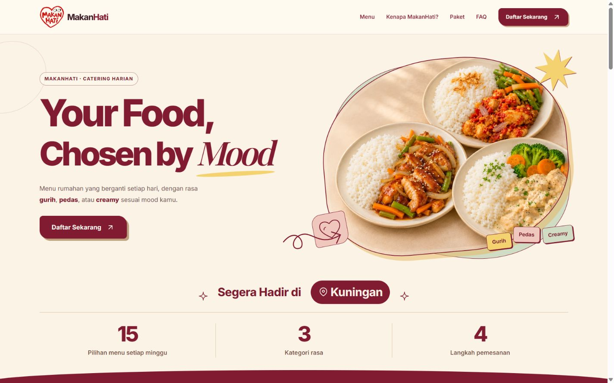
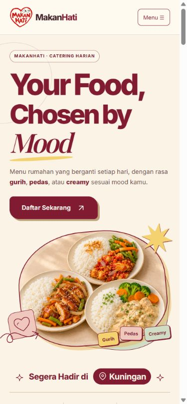

Sebelum: versi statis lokal yang disetujui. Sesudah: Next.js lokal. Screenshot diambil pada viewport yang sama.



Menu, form, CTA, FAQ dan sticky CTA juga diuji melalui interaksi. Lihat ../QA-MIGRASI.md untuk hasil dan batas pengujian.